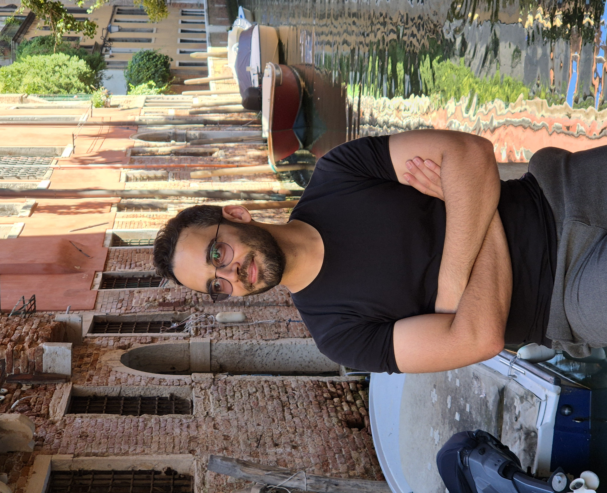

Research
Featured Projects
Advancing the frontiers of Bayesian statistics and high-performance computing.
Loading publications...
Loading education...
Recognition
Awards & Honors
- The 2023 Al-Kindi Research Award for outstanding Ph.D. research, Statistics Department, KAUST.
- Best Presentation Award, 8th KAUST-NVIDIA Workshop on Accelerating Scientific Applications using GPUs, KAUST.
- Winner, Poster Award in Bayesian Computation at ISBA22, Montreal, for "Approximate Bayesian Inference for the Interaction Types 1, 2, 3 and 4."
- Full merit-based graduate fellowship, American University of Beirut.
- Full merit-based scholarship, USAID program, Haigazian University.
- "Outstanding Marketing Campaign Award" & 2nd Place, Social Entrepreneurship Competition.
- Top-rated Leadership Student, Selected by "Beyond Reform and Development."
Loading talks...
Loading news...
Thoughts
Reflections
Loading reflections...